Savas Labs
Chris Russo
Total value of ownership
Drupal 8 and beyond
Who we are
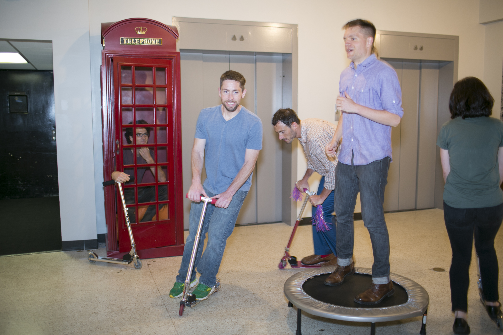Where we are

... or maybe this helps more?

We're also in
BostonMA
 Chattanooga
Chattanooga TN
 Portland
Portland OR


Who I am
Work me
Real me
More of me
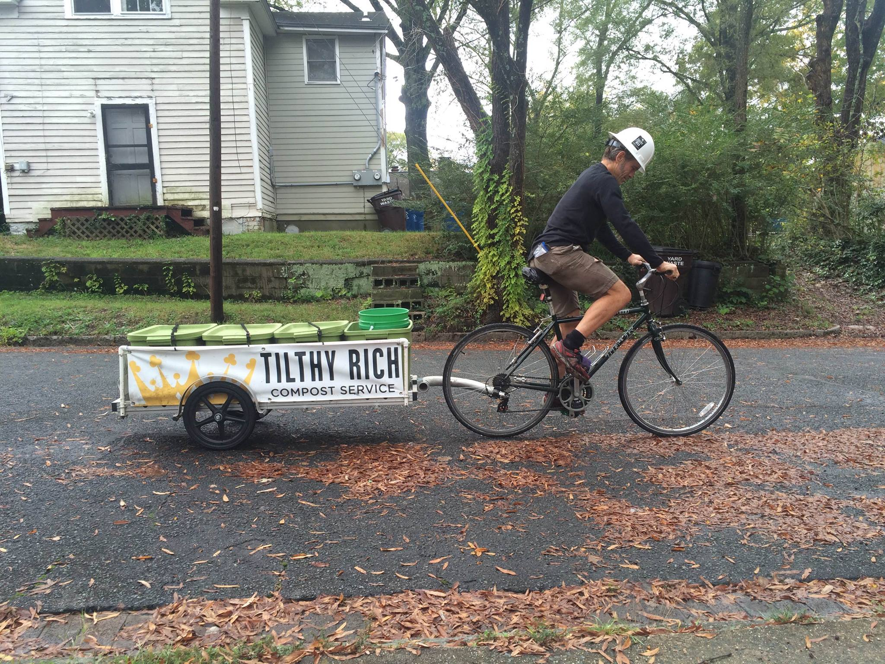Who are you?
My roots
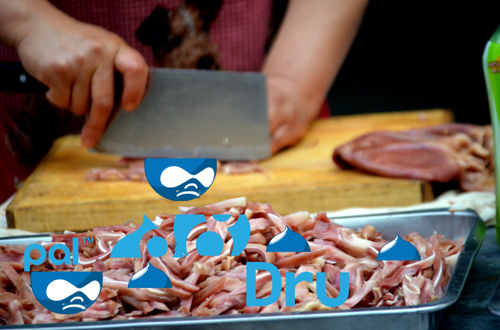What we're talking about today
Total value of ownershipTotal cost of ownership (TCO) is a financial estimate intended to help buyers and owners determine the direct and indirect costs of a product or system.
Value we provide our clients
- Defined by each organization
- Difficult to objectively measure
Who are the proprietary players out there?
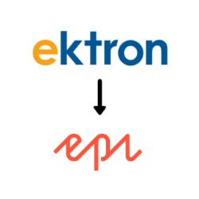
Proprietary CMS leaders
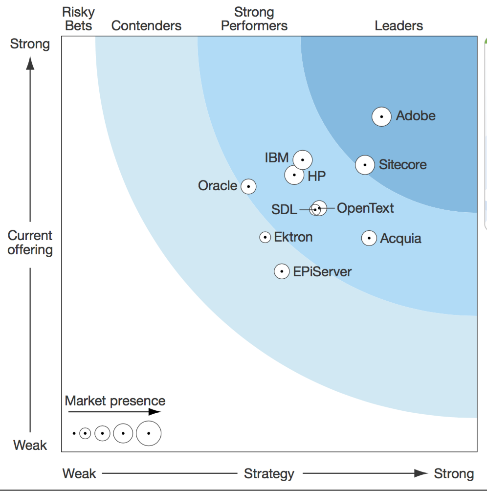Proprietary CMS leaders
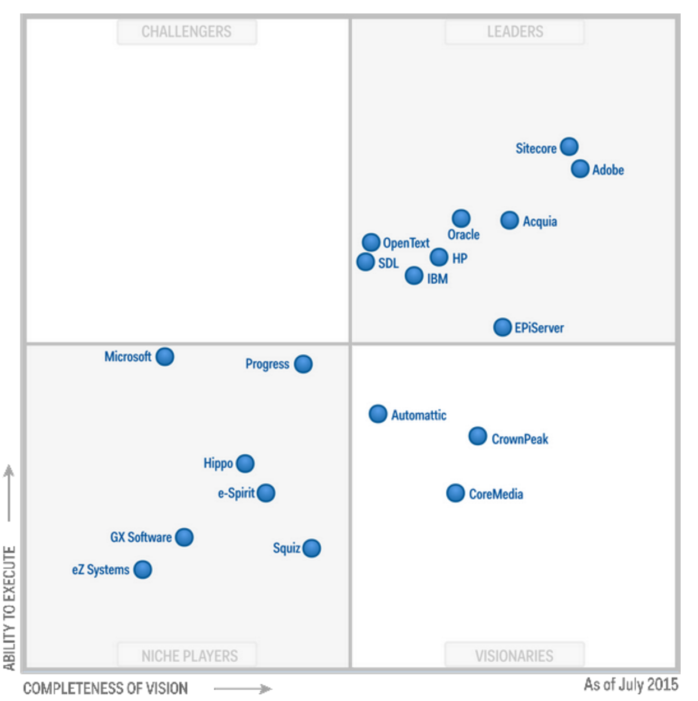Open source leaders

 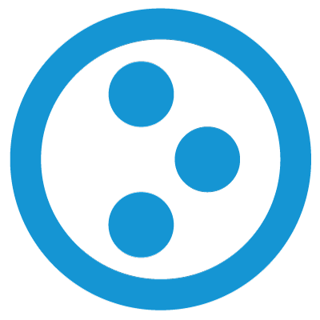
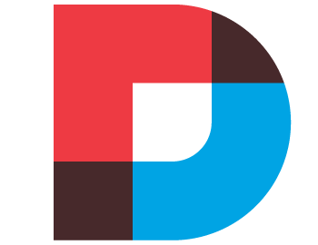
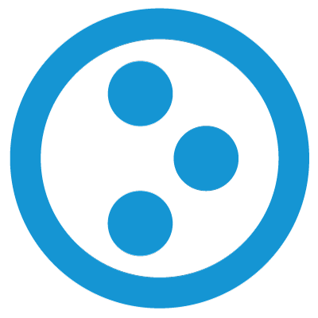
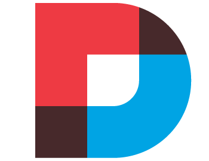
Open source: who to watch
Open source CMSes =
~80%
Where does Drupal fit in?
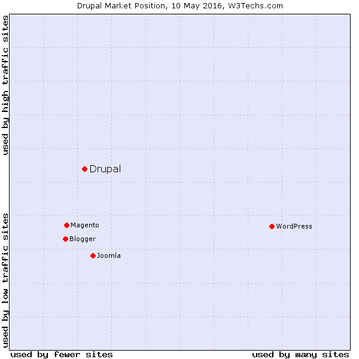Market Trends
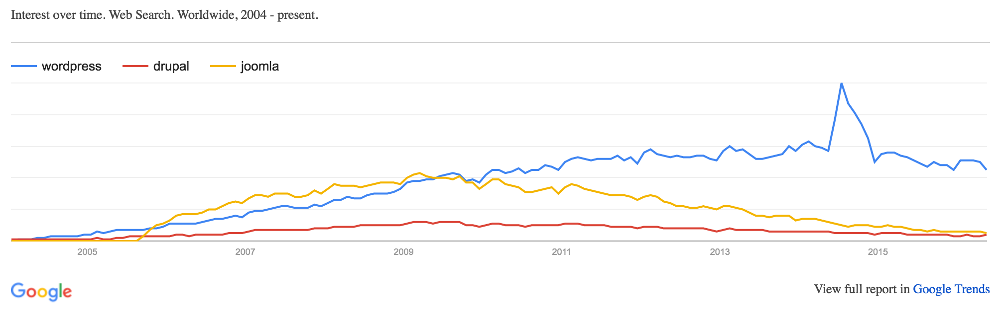How is Drupal 8 doing?
Adoption
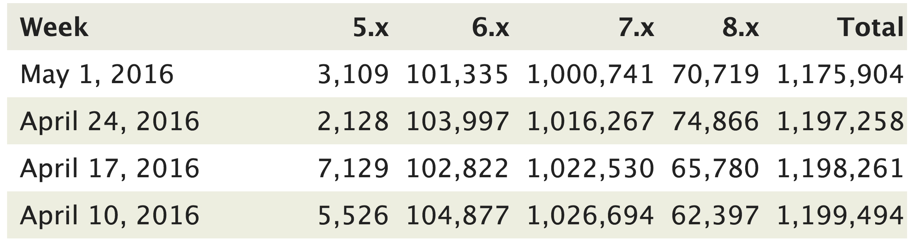Adoption in Drupal 7
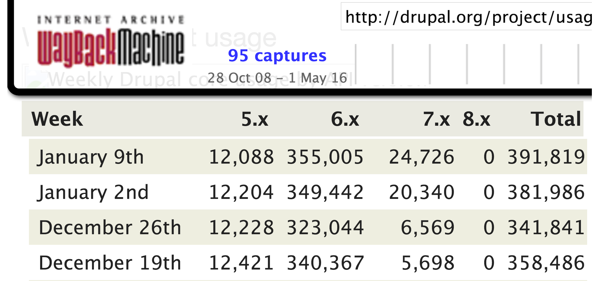Slower adoption in Drupal 8
Potential causes
- Migration difficulties
- Key contrib slowness
- Signficant architectural changes
How is Drupal 8 doing strategically?
What is value?
...smart people working real time on solving problems and creating new value.Measuring Drupal's value
https://www.openhub.net/p/drupalDrupal's value
according to Cocomo
- Lines of code: ~1.2 million!
- 194 person-years of work!
Drupal's value
active community
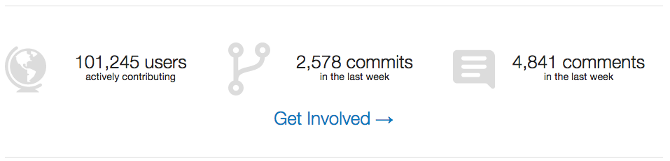"...So fostering the Drupal community is actually more important than just managing the code base."
"We still exist because we keep reinventing ourselves."
When does Drupal not make sense?
- Not expecting any maintenance or updates over time
- Battling inertia
- Don't benefit from the power
CTA: Community

"It takes time and mentorship to contribute to open source, and not everyone has those two things."
Wim Leers on privilege and obligation
CTA: Businesses
CTA: Businesses
Support Drupal
- Contribute code
- Host sprints
- Host meetups
...Our investment in Drupal 8 has given us unprecedented access to the latest Drupal 8 techniques and put us lightyears ahead of others agencies.
CTA: Drupal leadership
What is beyond?
?Thank you contributors!
- Sandy Marsico - CEO Sandstorm Design
- My team
- TriDUG meetup
- Gary Brewer - Builtwith founder
How Was It? Tell Us What You Think
Evaluate this session - savaslabs.com/dcon